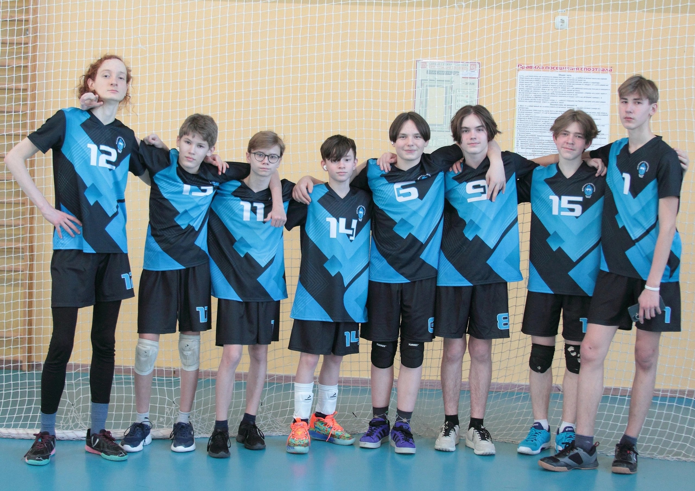

08 февраля 2024 года в г. Лукоянов прошел отборочный этап соревнований среди команд общеобразовательных организаций "Серебряный мяч" (в рамках общероссийского проекта "Волейбол в школу"). Спортсмены приехали из таких населенных пунктов, как Гагино, Сергач, Лукоянов, Ардатов, Тумботино, Починки 🏐
Город Саров на этих соревнованиях в группе «Юноши 2009-10 г.р.» представляла команда Лицея № 15 👏
Юноши соревновались в двух подгруппах. В своей группе наши ребята, проявив характер и волю к победе, одержали победу над командами Лукоянова (со счётом 2-1) и Гагино (со счетом 2-0). К сожалению, не удалось обыграть команду из Сергача. По итогам первенства наша команда заняла, достойное, 3 место! 1 место- Тумботино, 2 место- Сергач 🏆